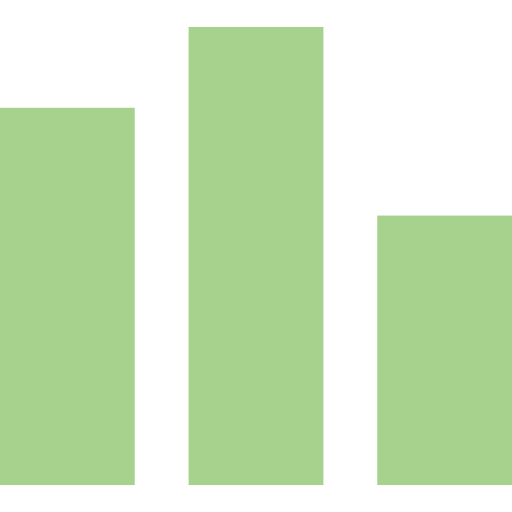

ことのはたんご


日本語版のWordleとして作成しました。
1日1回遊ぶことが出来る単語推理ゲームです。
日本語の特性上本家Wordleよりもだいぶ難易度が高いです（簡単にするために、4文字の物も構想中です）
10回の試行で決められたたんごを当てて下さい。
それぞれの試行は本アプリの辞書で定められた5文字のことのはであることが必要です。
各試行のたびに文字のタイルの色が変わり、試行した単語に対して評価を行っています。
「キ・ウ」はたんごに含まれており場所も正しいです。
「シ」はたんごに含まれているが場所が違います。
「ョ・ツ」はたんごに含まれていません。
日本語は単語数が膨大なため、存在する単語でもことのはに登録されていない可能性があります。ご了承下さい。
出題単語に対するフィルタリングを行っていません。本アプリにて出題される単語は「政治・宗教的・性差別・性的」な意図を含みません。
たんごは乱数を用いて毎日辞書より生成しています。内部のJavaScriptを解析すると取得出来ますが、そのような行動はお控え下さい。

未実装
本アプリケーションは クリエイティブ・コモンズ 表示 - 非営利 - 継承 4.0 国際 ライセンスの下に提供されています。
本アプリケーションはくわえて、BSDライセンスの下に提供されています。
また本アプリケーションは次の著作者によるソフトウェアを使用しています：The UniDic Consortium「UniDic-cwj_3.1.0」 [https://ccd.ninjal.ac.jp/unidic/]
「UniDic-cwj_3.1.0」はBSDライセンスおよびクリエイティブ・コモンズ 表示-非営利-継承4.0 非移植(CC BY-NC-SA 4.0)のもと提供されています。
バグ等が発生した場合はGitHub上のissuesに投稿して下さい。また新規単語の登録希望は受け付けていません。